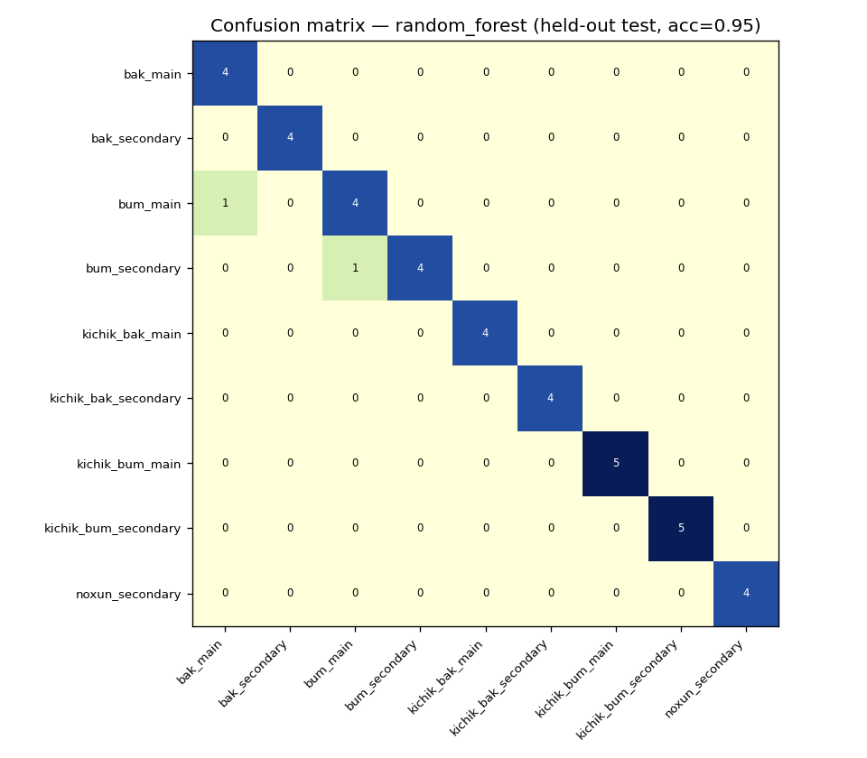

Learn the rhythm
A model trained on recordings of real doyra performances learns to generate authentic usul patterns — the traditional rhythmic cycles built from dum, tak, and roll.
Student research · AI + Robotics · Samarkand, Uzbekistan
Doyra AI is a research project that listens to real doyra performances, learns the rhythmic language of usul — deep center strikes, sharp rim strikes, and fast rolls — and teaches a two-armed robot to play it back with its own hands.
01 — Overview
A model trained on recordings of real doyra performances learns to generate authentic usul patterns — the traditional rhythmic cycles built from dum, tak, and roll.
A two-armed robot performs what the model generates: one arm holds and angles the drum, the other strikes it with solenoid-driven fingers.
A short research paper documents the dataset, the model, the hardware, and an evaluation by real doyra teachers.
02 — How it works
The pipeline is a loop, not a line: what the robot plays for teachers is judged, and that judgement becomes new data.
Field recordings of doyra performances, hand-labeled by strike type (dum / tak / roll) and usul pattern.
A sequence model learns the grammar of usul and generates new, stylistically consistent rhythmic patterns.
A two-armed robot translates generated patterns into physical strikes on a real doyra.
Doyra teachers rate authenticity and timing; ratings and corrections flow back into the dataset.
03 — Dataset
| Recording ID | Usul | Performer / region | Duration | Tempo (BPM) | Labels available |
|---|---|---|---|---|---|
| bak_main_07 | N/A — Phase A | Right-handed (single performer) | 0.83s | N/A — Phase A | note, hand_role |
| bum_secondary_14 | N/A — Phase A | Right-handed (single performer) | 0.83s | N/A — Phase A | note, hand_role |
| kichik_bak_secondary_03 | N/A — Phase A | Right-handed (single performer) | 0.83s | N/A — Phase A | note, hand_role |
| noxun_secondary_09 | N/A — Phase A | Right-handed (single performer) | 0.83s | N/A — Phase A | note, hand_role |
04 — Model & Results
CONTENT TODO — describe the model architecture, input representation (e.g. strike-event sequences), training objective, and any conditioning (usul type, tempo, performer style).

| Metric | Baseline | Doyra AI model |
|---|---|---|
| Classification accuracy (5-fold CV) | 11.1% (chance, 9 classes) | 91.7% (random forest) |
| Held-out test accuracy | 12.7% (majority-class guess) | 95.0% (40 held-out clips) |
| Best model (of 4 compared) | — | Random forest — vs. logreg 91.1%, SVM (RBF) 91.1%, kNN 87.9% |
| Confusion pattern | — | Sensible, not random: bak_main ↔ bum_main, kichik_bak ↔ kichik_bum (physically similar strokes) |
05 — Robot
One arm holds and angles the doyra by its rim; the other strikes it with solenoid-driven fingers tipped in silicone, translating each generated dum, tak, and roll into a physical motion.
| Component | Description |
|---|---|
| Controller | ESP32 |
| Striking arm | 4–5 solenoid-driven striking fingers with silicone tips |
| Support arm | Servo-driven support arm with rim clamp |
| Structure | 3D-printed PETG joints with an aluminum frame |
06 — Paper
CONTENT TODO — paste the final abstract here (dataset summary, method, hardware, evaluation, and headline finding).
@misc{doyra_ai_—,
title = {Doyra AI: Learning and Performing Traditional Uzbek Frame-Drum Rhythms},
author = {— },
year = {—},
note = {— venue / preprint link —}
}07 — Gallery
08 — About
CONTENT TODO — short bio: high school student in Samarkand, Uzbekistan, who has played doyra since childhood; what led to this project; relevant background in music, engineering, or ML.
CONTENT TODO — thank doyra teachers, mentors, schools, or programs that supported the project.